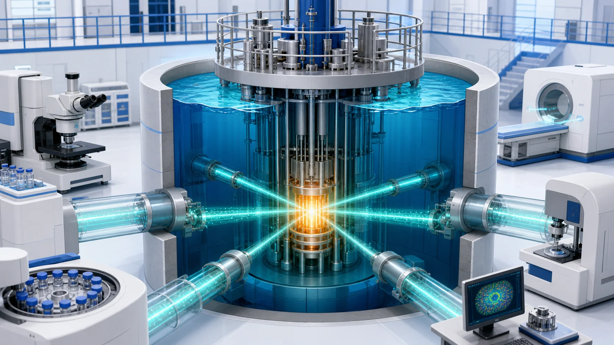
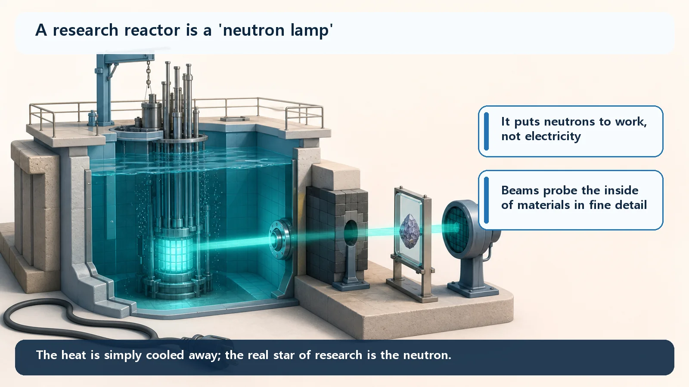
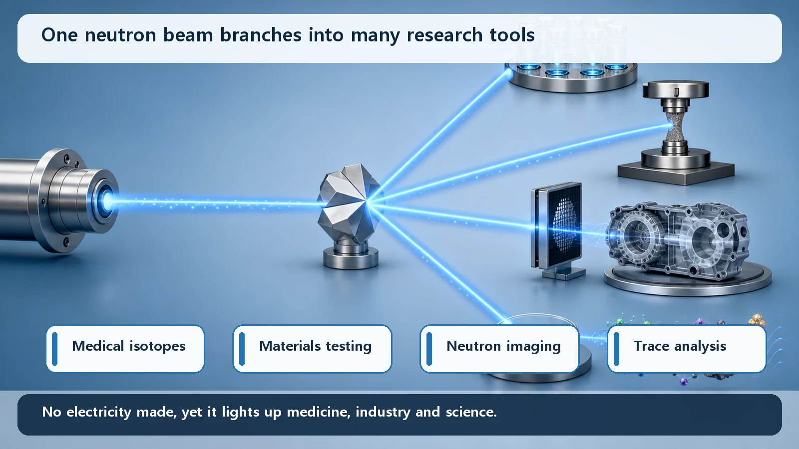

Reactor Types & Plant Systems · 186
If What We Wanted from a Candle Was Light, Not Warmth — Why Research Reactors Matter Without Making Electricity
Power reactors sell fission's heat; research reactors sell its neutrons, and their usefulness is set by neutron flux, not electrical output.

A research reactor is run not to make electricity but to harvest the neutrons that pour out of fission. A power reactor sells fission's heat; a research reactor sells its neutrons, using them to make medical isotopes, look inside materials, test reactor materials, analyze trace elements and train specialists.
Picture a single candle. In a cold room you cup your hands around it: "Nice, it's warm." During a power cut at night, the same candle becomes "Thank goodness, I can see." Same little flame, completely different object, depending on what you want from it.
When people talk about nuclear reactors, most of us picture a giant power station. And the nuclear power plants we usually hear about do exactly that: they collect the heat released by fission, turn water into steam, and use the steam to spin a turbine that makes electricity. In candle terms, they use the warmth. But there is a separate family of reactors that make no electricity at all. They are switched on to harvest something else, the reactor's equivalent of the candle's light. These are today's subject: research reactors.
So what is the "light" a research reactor collects?
When fission happens, two things pour out together. One is energy, mostly as heat. The other is neutrons. A neutron is one of the particles that make up an atomic nucleus, the one with no electric charge, and several of them fly out every time a nucleus splits.
A power reactor sells the heat. Its neutrons are just messengers that keep the chain reaction going; they are never taken outside to be used. A research reactor is the exact opposite. It doesn't make electricity; instead, it is run so that those streaming neutrons themselves can be drawn out and put to work. It's the same idea as choosing a candle's brightness over its warmth. Put simply, if a power reactor is a shop that sells heat, a research reactor is a shop that sells neutrons.

Small is a side effect; the purpose is different
Research reactors are usually much smaller than power reactors. A large power reactor produces thousands of megawatts (MW) of heat, while research reactors typically run from a few hundred kilowatts to a few tens of megawatts. So it's tempting to think, "Ah, a research reactor is just a small power plant." It isn't.
Being small is simply the result of not aiming to generate power. If you're not making electricity, there's no reason to produce an enormous amount of heat. What a research reactor works hard at instead is how densely, and how plentifully, it can deliver usable neutrons to its experiment spaces. That quantity is called the neutron flux: think of it as how crowded the neutrons are as they pass through a given area. A power reactor is designed to "remove a lot of heat, safely"; a research reactor is designed to "deliver a rich supply of usable neutrons." Different purposes, different directions of good design.
What on earth do they do with those neutrons?
Why build a whole reactor just to extract neutrons? Look at what they do. In fact, almost every route by which nuclear technology reaches our lives other than electricity runs through research reactors.
First, they make radioactive isotopes for diagnosing and treating disease. Expose a material to neutrons and it captures some of them, turning into radioactive isotopes. Many of the isotopes made this way go to hospitals. For example, radioactive materials used in diagnostic scans that image organs inside the body, and in some cancer treatments, are produced in research reactors.
Second, they look inside materials. Draw neutrons out of the core as a thin beam and aim it at a material, and you can see internal structures and atomic arrangements that X-rays struggle to show. Neutrons are especially good at finding light substances such as water or hydrogen inside metal, without damaging the part. Quite literally, the neutrons serve as a "light that shines into matter."
Third, they test reactor materials and fuels in advance. How does a metal or fuel change after long exposure to intense neutrons inside a reactor? Research reactors let engineers find out ahead of time, before those materials go into service. It's an essential step toward building new reactors that are tougher and safer.
Fourth, they detect even tiny amounts of an element. Irradiate a sample with neutrons to make it slightly radioactive, then read the signals it gives off, and you can tell which elements it contains, and how much, down to trace levels. This is used to track environmental pollutants and to reveal what ancient artifacts are made of. Beyond these, neutrons are used to make semiconductor material more uniform, and at universities and institutes research reactors are classrooms where students learn about reactors hands-on.

Why "flux," not "power," is what counts, in one line
A research reactor's usefulness can be written as a very simple proportionality. For instance, the rate at which a radioactive isotope is produced in a target material goes roughly like this:
Production rate ∝ neutron flux (φ) × number of target atoms (N) × how readily the reaction occurs (σ)
φ (phi) is how crowded the neutrons passing through the target are (the neutron flux), N is how much target material there is, and σ (sigma) is how readily that target captures neutrons. The interesting part: "electrical output" appears nowhere in this formula. A research reactor's value is set not by how much electricity it makes but by how richly it pours out neutrons. That one line answers "If it's so small, why is it so useful?"
South Korea has such a reactor too. HANARO, operated by the Korea Atomic Energy Research Institute (KAERI), is a multipurpose research reactor of about 30 megawatts thermal. It actually does the jobs described above, from isotope production and neutron beam experiments to materials testing and semiconductor material processing.
Points people often mix up
A few misconceptions to wrap up. First, "Isn't a research reactor just a small power plant?" No. Its small size is a consequence; its purpose is not power generation but using neutrons. Not making electricity isn't a shortcoming; it's the design intent.
Second, "If it doesn't make electricity, how important can it be?" Quite the opposite: medicine, industrial inspection, new reactor materials, semiconductors, science and training the next generation of specialists all run through here.
Finally, some imagine research reactors as dangerous experimental contraptions. Generally, their low thermal power means they don't carry the burden of removing as much heat as a power reactor, and they are designed and operated under national and international regulations and safety standards. A balanced view neither exaggerates the risk nor declares them unconditionally safe.
Today's takeaways
- A research reactor is run not to make electricity but to harvest the neutrons that pour out of fission.
- Power reactors sell fission's heat; research reactors sell fission's neutrons, like choosing a candle's light over its warmth.
- Research reactors are small because power isn't their goal; their design instead focuses on raising the neutron flux available for experiments.
- Those neutrons make medical isotopes, probe materials, test reactor materials and fuels, analyze trace elements, process semiconductors and support education.
- What sets their usefulness is neutron flux, not electrical output (production rate ∝ flux × amount of target × how readily the reaction occurs).
Behind its familiar face of electricity, nuclear technology also wears this other face, the neutron, quietly reaching hospitals, laboratories and factories. Next time "nuclear" makes you think only of power plants, perhaps you'll remember: "Oh right, there are reactors that sell neutrons, not electricity."